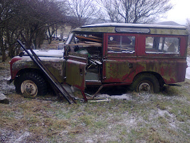
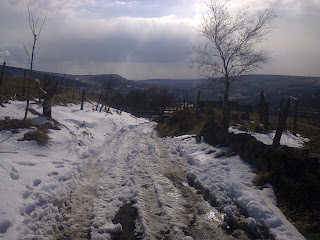
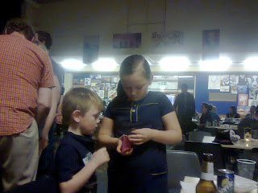
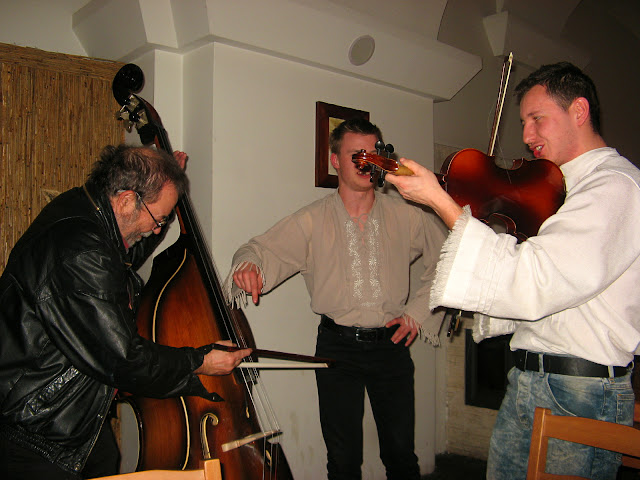

Are you proud to be a writer? Is it
something you readily admit to, or do you hide behind other things you do, or
have done? And do you expect your children, and (the modern term) ‘loved ones’
to be proud of you – or even a bit boastful by proxy?
Let me tell you about one sunny afternoon
when I was sitting on the upstairs lav, reading the paper. (Hard life, being a
writer, we all know that!) In the yard below my son Hughie was talking to a
friend. The conversation was desultory, in between bouts of kicking a ball
about. I hear Ben, the friend, say – ‘Your dad’s a writer, isn’t he?’
Did a small, fond, smile of pleasure lick
around my chops, I wonder? If it did, it was damn short-lived. For Hugh
replied, without the smallest hesitation – ‘No, he’s not.’
Good God, I’ve bred up a literary critic!
Damn and blast that bloody school!
Ben was not for turning.
‘Yes he is,’ he said. ‘One of his books is
in the shop down the road. In the window’
A short pause.
‘That’s not him. That’s a different Jan
Needle.’
‘You’re bonkers, you are, Hughie. Your dad
writes books.’
‘No he doesn’t. End of.’ (Very modern
child, see. He was at least twenty years early with that cliché.)
‘All right then,’ says Ben. ‘What does he
do, then?’
There was a long pause this time. Then Hugh
said decisively: ‘He’s a professional snooker player.’
End of.
Fast forward a good few years, and my
grandchildren, Issy and Fin, were asked if I could go to a school barn dance
with them. Not much thought needed this time.
 |
| Eskimo Nell. Old, beloved, scrap... |
{kind=link}
Some of their teachers, incidentally, have sometimes
asked them if I might come to school and give a talk. Issy and Fin, I imagine,
merely roll their eyes. God knows what they’ve told the staff about my personal
habits, but I’ve never been invited. As I wasn’t when their mother was at the
same school, and brother Hughie, and brother Dave. There’s fame and fame, apparently.
With fame ruled out, then, what exactly is
it for, to be a writer? I’ve been at
it for a fair few years now, having first been published at the age of eight.
Overall, I’d say it’s been a combination of drudgery and hope, with bursts of
quite substantial dosh, short enough to prove how insubstantial earning dosh
can be.
 |
| My track 3 weeks after first snow. |
{kind=link}
 |
| Issy and Fin, buying drinks for granddad? |
{kind=link}
AE was the start of it, so thanks for that, fellow members, and thank you, Sue Price, for inviting me. I quite quickly got fascinated by some
other of the virtuals, and then got to meet some of them, half by accident. The doughty Dan Holloway, for example, in a dingy back street slammer (poetry, not
penitentiary) in Manchester. Julia Jones in a dinghy, not at all dingy, and her
wonderful Peter Duck. Dennis Hamley, who I’d actually met once before, the
morning after Bob Marley’s death, when I was too hungover to really focus.
Then there’s the appalling bossyboots Cally
Phillips, whose mental energy and grip and generosity give me a constant
headache trying to keep up. We live hundreds of miles apart, and she’s guided me through the
jungle of technology, and egged me on, and put me right, and shared thoughts
and photos of Land Rovers and other essential props of a creative life, as well
as competitive boasting about how much worse our weather’s been than each
other’s. (There’s a grammatical construction I wouldn’t care to defend in a
court of law!) (And another thing, my Land Rover's better than hers. Judge for yourself!)
She clearly wants to make me a better person. Fat chance. But it's culminated in her offering me a four-wheel drive Subaru – for free! – because she thinks I’d give it a good home. A six or seven hundred mile round trip (even further in metric!) and the chance to pick her formidable brain and be peed on by her lovely Dude. (Note the capital letter. I don't mean George, he doesn't do that sort of thing. I hope.) I'm off up there in a week or two. As the grandkids would say, I can't wait!
| Cally's 'better' Landy.....hmmm |
{kind=link}
{kind=link}
 |
| Fame at last! And without a pen in my hand... |
I was taken to Auschwitz for my birthday
last month by my son Hugh, and that was a similar sort of break out. The camps
were appalling, but Krakow was fantastic. And you meet such unexpected people.
I realized at one point that Nick Griffin, yes, Nick Griffin, was sitting at a
table in the sunshine just behind me, with two other people, talking earnestly
in low voices. They looked almost normal, which is still distressing weeks
afterwards. Only a short train ride from Auschwitz. Gee.
Then that night, in a nearby café, I bought beers
for three young musicians. Polish, two violins and a double bass, playing and
singing folk songs. Bugger being virtual, let’s dive in! I ended up playing the
double bass, by bow, while they played and sang and shouted out which string I had to hit.
Making the virtually unbelievable happen. Because I’ve never touched a double bass
in my life before, and never will again. It was wonderful.
So look out, Cally – here I come. And let’s
develop the coffee idea, and the rest of it. At a pinch Julia and me, between
us, have got enough boats to hold thirty people. Let’s sail across to Poland
and start a band!